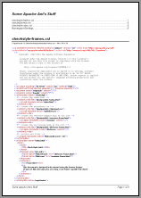
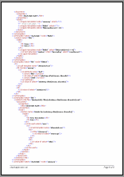
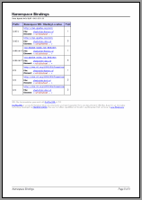

The "XML File Documentor" (or "XMLDoc") set of templates allows to compile any number of generic XML files into a nice looking web-ready HTML or printable RTF documentation with the optional inclusion of a namespace binding report.
It may also serve as an example of a very simple and, at the same time, practically useful application of DocFlex/XML. See Templates to learn how it works.
The set includes two main templates (i.e. those to be specified directly
in the generator dialog
or on the command line
with -template
option):
Besides those main templates, there are few sub-templates, which are called internally from the both main ones. See Templates for more details.
The following XML file demo documentation has been generated from three XSL files (XSL is a subset of XML that encodes XSLT scripts) found in Apache Ant software package.
We have chosen those files simply because we use Apache Ant itself (without learning much what those XSLT scripts do).
The following pages are from an RTF document generated with XMLDoc.tpl template (click on the screenshot to see the real size page preview):
  
This is actually the same document as RTF above generated with XMLDoc.tpl template, however, now it is in HTML format (click on the screenshot to see the real HTML):
The following is a framed HTML variant generated with XMLDocFrames.tpl template (click on the screenshot to see the real HTML):